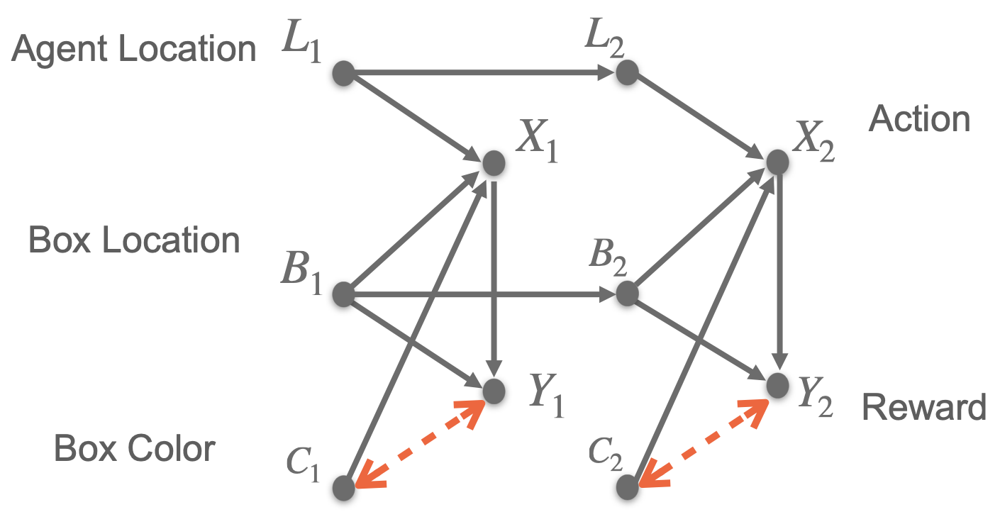
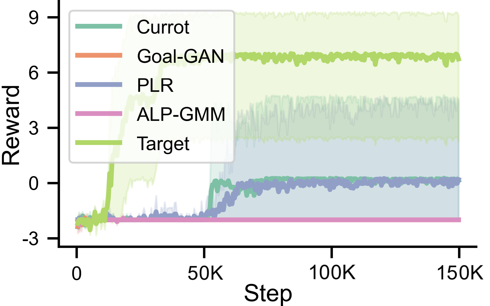
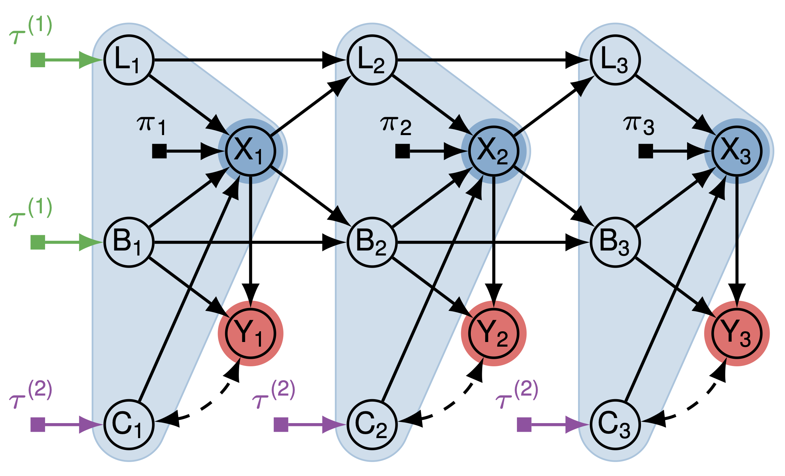
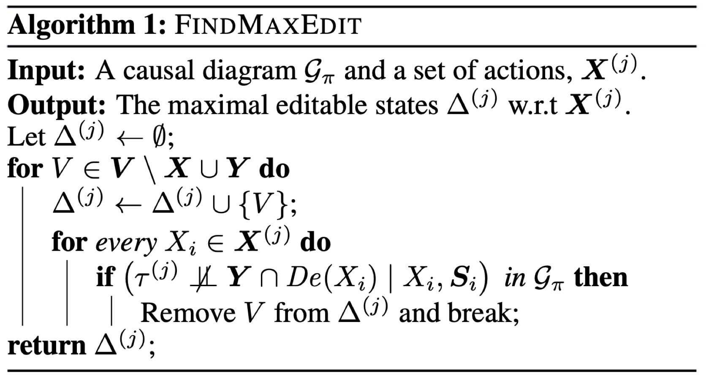
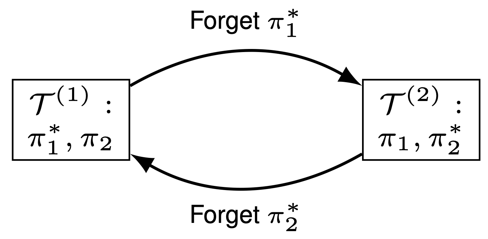
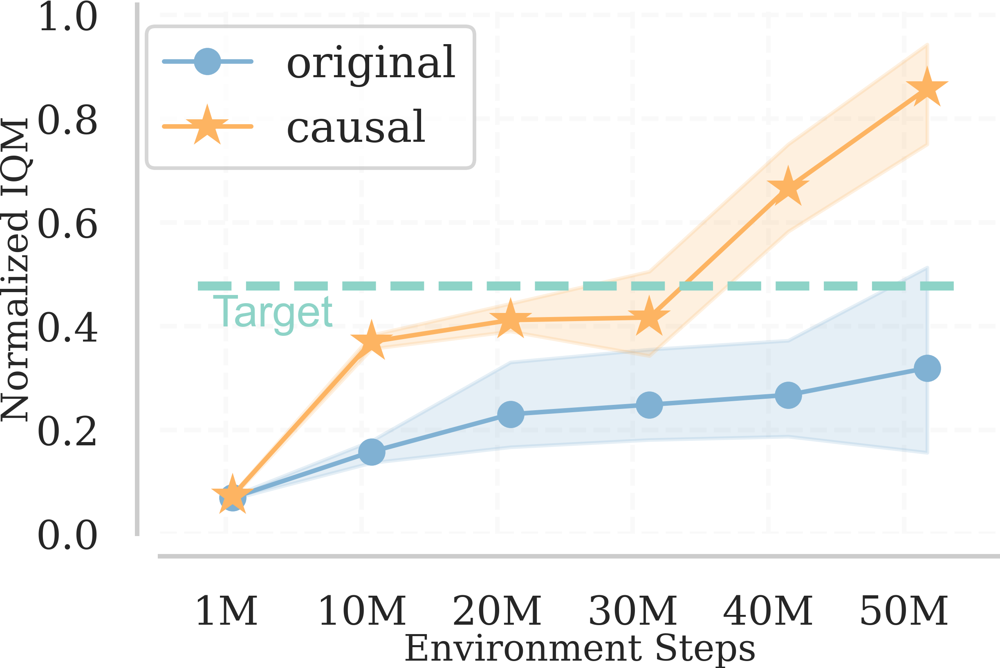
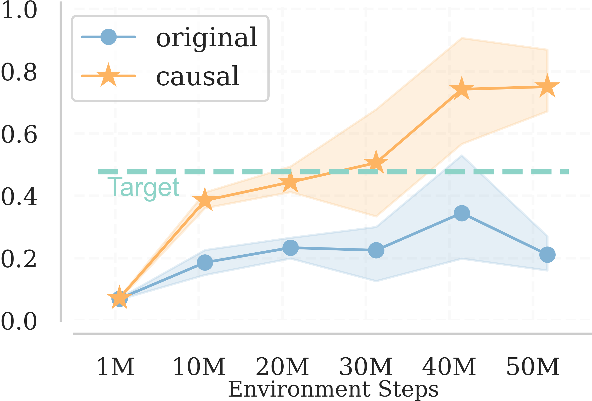
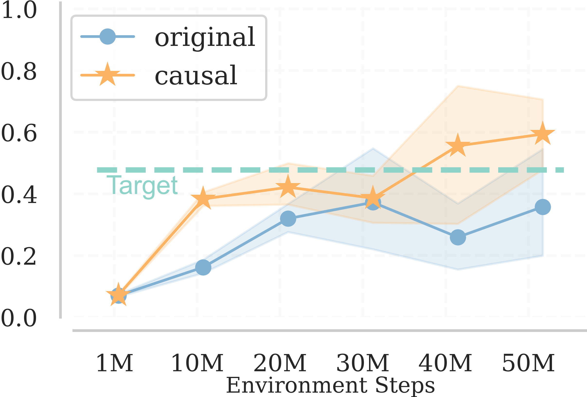

A pervasive challenge in Reinforcement Learning (RL) is the “curse of dimensionality” which is the exponential growth in the state-action space when optimizing a high-dimensional target task. The framework of curriculum learning trains the agent in a curriculum composed of a sequence of related and more manageable source tasks.
The expectation is that when some optimal decision rules are shared across source tasks and the target task, the agent could more quickly pick up the necessary skills to behave optimally in the environment, thus accelerating the learning process. However, this critical assumption of invariant optimal decision rules does not necessarily hold in many practical applications, specifically when the underlying environment contains unobserved confounders. The following video clip from a confounded Pacman game demonstrate this. The left clip is from agent trained by a curriculum generator unaware of the confounders while the right one is from an agent trained by a causally augmented generator.
Original Curriclum Causally Augmented Curriculum
In this blog post, we will discuss the problem of curriculum RL through causal lenses. Specifically, how we can utilize the non-parametrical qualitative knowledge (causal diagram) to identify editable environment factors and show a principled way of designing a causally aligned curriculum automatically. We will cover the following topics:
- Challenges of misaligned source tasks;
- What makes a good source task?
- How to compose a good curriculum?
Challenges of Misaligned Source Tasks
The typical assumption underlying curriculum RL is that the agent could pick up useful skills in training source tasks and those “policy pieces” could be reused to achieve optimal in the target task. However, this critical assumption may be broken by the existence of unobserved confounders.
Consider the following modified Sokoban game where an unobserved confounder \(U_t\) randomly determines the box color \(C_t\) (0 for yellow, 1 for blue) at every time step \(t\). The agent receives a positive reward \(Y_t\) only when it pushes the box to the goal state when the box color appears yellow (\(U_t = 0\)); otherwise, it gets penalized (\(U_t = 1\)).

We apply several state-of-the-art curriculum generators that construct source tasks by fixing the box color to yellow or blue, including ALP-GMM [1], PLR [2], Goal-GAN [3], and Currot [4]. Surprisingly, simulation results reveal that agents trained by the curricula failed to learn to push the yellow box to the destination. This suggests source tasks generated by intervening in the box color are misaligned; that is, training in these source tasks harms the agents’ target task performance.

What Makes a Good Source Task?
The previous example suggests that naively training the agent on all source tasks generated by the curriculum generator may lead to suboptimal performance in the target task. In this part, we will introduce an efficient strategy to avoid misaligned source tasks, provided with the causal knowledge of the underlying data-generating mechanisms in the environment.
Looking at the causal diagram of the modified Sokoban game, we find that the confounder between the box color and the reward signal is crucial to making the right decisions. Thus, without having further parametric assumptions on the structural equations, the curriculum generator should leave the box color variable untouched (\(C_t\)). We summarize this intuition into a straight forward graphical criterion,
where \(\tau_j\) is the set of added edit indicators pointing into nodes in the set of editable variables. See the following causal diagram of the modified Sokoban game with edit indicators for an illustration.

By our graphical criterion, we can see that the initial agent location \(L_1\), and the initial box location \(B_1\) are both editable while box color \(C_t\) are not. We can automate this procedure by using the following algorithm,

How to Compose a Good Curriculum?
So far we have seen how one should construct causally aligned source tasks automatically, one may say that we can conclude here and call it a day. Instead, the training ordering of those aligned source tasks may also affect the learning efficiency of the target task. In the main text of our paper [5], Example 2 exhibits such a possible scenario where in a two stages decision problem, the agent learns one optimal policy piece while forgetting the other in different source tasks resulting in repeatedly learning and forgetting. Thus, it will never acheive the fulll optimal target policy.

To avoid such cases, we should follow some simple principles that,
- Every source task only modifies those editable states w.r.t a set of actions \(\boldsymbol{X}^{(j)}\);
- \(\boldsymbol{X}^{(j)} \subseteq \boldsymbol{X}^{(j+1)}\) for \(j = 1,...,N-1\).
Experiments on Confounded Pacman
Other than the experiments conducted in the original paper, we further tested our approach in a more complex environment based on the OpenAI Procgen benchmark [6]. We modified the Chaser game in a way that,
- There are fake power gem (blue ones) that have no effect on ghost edible states;
- The ghost will not change its form when the agent takes a power gem (yellow ones) but only its speed will be changed;
- The curriculum generator is allowed to choose from modifications including:
- whether allow the ghosts to always be edible;
- whether allow the ghosts to respwan;
- Num of ghosts;
- Num of power gems;
- whether to fix all the gem color to yellow or blue (won’t change its underlying original effect);
We train the agent with both original curriculum generators and causally augmented ones for 50M environmental steps with 5 random seeds. The result suggests that causally augmented ones consistently outperform the baselines indicating the effectiveness of our approach in high dimensional complex environments.
  
ALP-GMM [1] PLR [2] Currot [3]
References
[1] Rémy Portelas, Cédric Colas, Katja Hofmann, and Pierre-Yves Oudeyer. Teacher algorithms for curriculum learning of Deep RL in continuously parameterized environments. In Leslie Pack Kaelbling, Danica Kragic, and Komei Sugiura (eds.), 3rd Annual Conference on Robot Learning, CoRL 2019, Osaka, Japan, October 30 - November 1, 2019, Proceedings, volume 100 of Proceedings of Machine Learning Research, pp. 835–853. PMLR, 2019. URL http://proceedings.mlr.press/v100/portelas20a.html.
[2] Minqi Jiang, Edward Grefenstette, and Tim Rocktäschel. Prioritized level replay. In Marina Meila and Tong Zhang (eds.), Proceedings of the 38th International Conference on Machine Learning, ICML 2021, 18-24 July 2021, Virtual Event, volume 139 of Proceedings of Machine Learning Research, pp. 4940–4950. PMLR, 2021. URL http://proceedings.mlr.press/v139/jiang21b.html.
[3] Carlos Florensa, David Held, Xinyang Geng, and Pieter Abbeel. Automatic goal generation for reinforcement learning agents. In Jennifer G. Dy and Andreas Krause (eds.), Proceedings of the 35th International Conference on Machine Learning, ICML 2018, Stockholmsmässan, Stockholm, Sweden, July 10-15, 2018, volume 80 of Proceedings of Machine Learning Research, pp. 1514–1523. PMLR, 2018. URL http://proceedings.mlr.press/v80/florensa18a.html.
[4] Pascal Klink, Haoyi Yang, Carlo D’Eramo, Jan Peters, and Joni Pajarinen. Curriculum reinforcement learning via constrained optimal transport. In Kamalika Chaudhuri, Stefanie Jegelka, Le Song, Csaba Szepesvári, Gang Niu, and Sivan Sabato (eds.), International Conference on Machine Learning, ICML 2022, 17-23 July 2022, Baltimore, Maryland, USA, volume 162 of Proceedings of Machine Learning Research, pp. 11341–11358. PMLR, 2022. URL https://proceedings.mlr.press/v162/klink22a.html.
[5] Mingxuan Li, Junzhe Zhang, and Elias Bareinboim. Causally aligned curriculum learning. In the Twelfth International Conference on Learning Representations, ICLR 2024. URL https://openreview.net/pdf?id=hp4yOjhwTs
[6] Karl Cobbe, Chris Hesse, Jacob Hilton, and John Schulman. Leveraging procedural generation to benchmark reinforcement learning. In International Conference on Machine Learning, pp. 2048-2056. PMLR, 2020. URL http://proceedings.mlr.press/v119/cobbe20a/cobbe20a.pdf